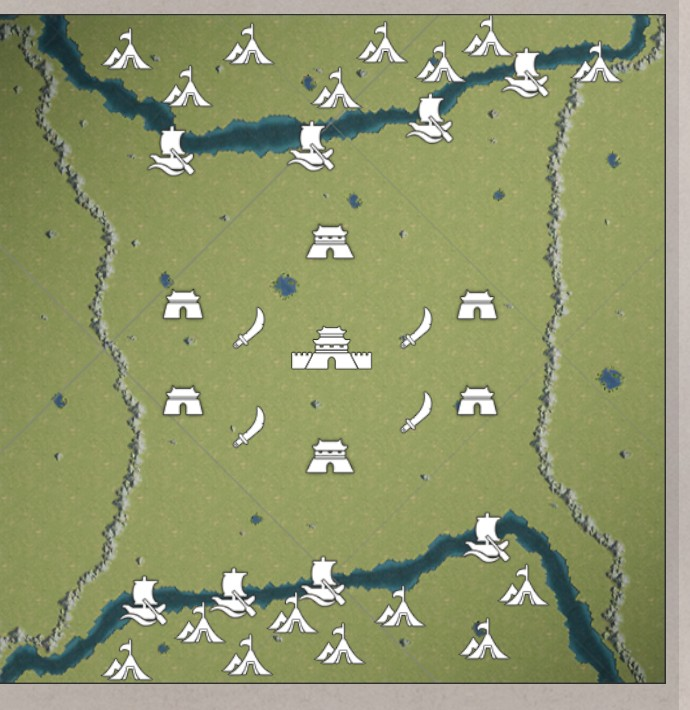

크로스서버 동맹 PVP · 게임 내 공식 규칙 반영판
개정 2026-09-09
크로스서버 동맹 PVP · 게임 내 공식 규칙 반영판
개정 2026-09-09
용쟁호투 작전 브리핑
게임 내 "이벤트 규칙" 전체 화면(신청 조건부터 45분 타임라인, 산출 수치, 보상까지)을 캡처해 재구성한 자료입니다. 이전 버전에서 "미확인"이었던 항목 대부분이 이번에 수치로 확정되었습니다. 여전히 게임 화면에 명시되지 않은 부분만 추정/미확인으로 남겨두었습니다.
- 신청 시작
- 매주 수 01:00
- 매칭 상대 공개
- 매주 토 09:00
- 본전투 시작
- 매주 일 21:00
- 교전 시간
- 45분 (21:45 종료)
01참가 자격 · 신청
신청은 동맹 단위입니다. 조건을 넘기지 못하면 애초에 대회 명단에 오르지 못합니다.
신청 조건 3가지 확인
동맹 생성일 15일 초과, 서버 랭킹 상위 20위 이내, 최소 동맹원 40명. 세 조건을 모두 충족해야 동맹 관리자(맹주·부맹주)가 수요일 01:00부터 신청할 수 있습니다. 신청이 완료되면 조건과 무관하게 모든 동맹원이 참가 가능합니다.
준비 단계는 토요일 09:00부터 확인
매칭 상대가 공개되면 관리자는 상대 전력을 보고 참가 조를 편성할 수 있습니다. 이 시점부터 기존 부대 편성을 원클릭으로 불러와 지원 무장·전법·매를 고르는 이벤트 준비가 열립니다.
전시 기간은 종료 후 1일 확인
일요일 21:45 종료 직후 승패·개인 랭킹에 따라 보상이 우편 발송됩니다. 이벤트 데이터(전투 기록·상대 전략)는 월요일 01:00까지만 열람할 수 있습니다.
02참가 조직 구조
맹주·부맹주가 인원을 어떻게 나누느냐가 승패를 직접 결정합니다. 주력군 밖의 인원은 승패에 관여하지 않습니다.
주력군의 승패 = 동맹의 최종 승패입니다.
분대는 개인 포인트 파밍과 견제만 담당하며 동맹 승패에는 영향을 주지 않습니다. 주력군에 배정되지 못한 인원은 자동으로 분대에 합류합니다.
대장은 번영도 상위 3명이 기본값 확인
주력군·분대 각각 팀 내 번영도 상위 3명이 자동으로 대장을 맡습니다. 맹주·부맹주가 이 인선을 다시 조정할 수 있습니다. 대장만 지휘 기능과 이벤트 계책을 사용할 수 있으므로, 실제 전투 감각이 있는 인원으로 재조정하는 것이 유효합니다.
주력군 정원은 별도 공지 필요 미확인
주력군·분대 각각의 정원 상한은 규칙 화면에 명시되지 않았습니다. 동맹원이 전원 참가할 경우 몇 명까지 주력군에 넣을 수 있는지는 실제 준비 화면(토요일 09:00 이후)에서 확인해야 합니다.
03이벤트 준비 · 편성
평소의 스펙 격차 대부분이 전장에 들어오는 순간 사라집니다. 무엇이 지워지고 무엇이 남는지가 전략의 출발점입니다.
| 항목 | 처리 | 신뢰도 |
|---|---|---|
| 무장 레벨 · 고유 전법 · 전법 레벨 | 이벤트 내 동일 레벨로 통일 | 확인 |
| 이벤트 속성 보정 | 모든 참가 주공에게 50% 적용 | 확인 |
| 원래 지도의 버프 · 디버프 | 적용되지 않음 | 확인 |
| 전투 판정 | "부대 방어·3" 이후의 수학 전투 속성만 반영 | 확인 |
| 장비 | 원 서버의 것을 그대로 사용 | 확인 |
| 전투매 | 원 서버의 것을 그대로 사용 | 확인 |
| 지원 장비 · 지원 전투매 | 이벤트 내에서만 쓸 수 있는 별도 지원품 제공 | 확인 |
| 편성 정보 | 원클릭 복제. 이벤트 편성에서 수정해도 원본은 영향 없음 | 확인 |
| 무장 상세정보 · 레벨업 · 초기화 | 이벤트 편성 내에서는 불가능 | 확인 |
장비와 전투매는 통일 대상이 아닙니다. 완전 평준화를 원했다면 이것도 통일했을 텐데 남겨뒀다는 건, 축적분의 가치를 일부 유지하려는 의도로 보입니다.
도감이 빈약할수록 빌릴 수 있는 폭이 넓습니다 확인
지원 무장 1명, 지원 전법 2개, 지원 매 4마리를 선택할 수 있습니다. 선택 범위는 주공님 도감에 보유하지 않은 무장·전법으로 제한됩니다. 도감에 빈자리가 없으면 무장 1명의 능력치 강화로 대체됩니다. 이벤트 선택 내용은 이번 시즌 한정입니다.
강화 효과의 크기는 여전히 비공개 미확인
공지는 "구체적인 강화 효과는 이벤트 선택 화면에 따름"이라고만 합니다. 전법 2개를 빌리는 쪽과 무장 1명을 강화하는 쪽 중 무엇이 유리한지는 준비 화면을 직접 열어봐야 판단할 수 있습니다.
04전장 건물 5종
이벤트 성지는 정비 → 쟁탈 → 산출 3단계(맹호성·비룡성) 또는 정비 → 쟁탈 2단계(그 외 3종)를 반복합니다. 쟁탈 기간에만 뺏고 뺏길 수 있고, 나머지 기간은 결과가 확정된 채로 흘러갑니다. 매 휴전(정비) 진입 시 소속이 초기화되어 다음 쟁탈 기간에 처음부터 다시 다툽니다.
맹호성 1급
동맹 점수 · 최고 산출량
- 정비→쟁탈→산출 3단계 순환. 산출 구간은 정확히 3분간 지속.
- 이벤트 전체 등급 중 최상위(1급). 5종 중 초당 산출량이 가장 높습니다.
비룡성 2급
동맹 점수 · 개인점수 최고
- 맹호성과 동일한 3단계 순환. 다만 동맹 점수는 맹호성보다 낮습니다(20→15).
- 대신 개인 포인트는 5종 중 가장 후합니다(초당 800) — 개인 랭킹을 노린다면 우선순위가 됩니다.
도적 거점
대량 포인트 1회 · 승자독식
- 정비·쟁탈 2단계뿐. 매 쟁탈 기간마다 4개 중 2개가 무작위로 활성화.
- 전원에게 공격 횟수가 부여되고(파견 1회=1회 소모), 정비 진입 시 피해량 최다측이 4,000점을 독식합니다.
조운 부두
소량 포인트 · 도하 게이트
- 누적 점령 시간이 기준을 넘기면 소량 포인트와 함께 섬 진입(장작영 접근) 자격을 얻습니다.
- 기간 내 어느 쪽도 점령 못 하면 중립 유지, 양측 모두 포인트 없음.
장작영
소량 포인트 · 전체 버프
- 조운 부두를 거쳐야 접근 가능. 강 건너편에 있어 본대와 물리적으로 단절됩니다.
- 기준 초과 시 전체 동맹원에게 임시 속성 버프 부여. 버프는 "지정된 시간" 동안만 유지되는 타이머형입니다.

배치·개수 확인
게임 내 "건물 분포" 화면 캡처
- 맹호성 3개 — 정중앙 세로축 한 줄
- 비룡성 4개 — 맹호성을 감싸는 바깥 사각형 네 모서리
- 도적 거점 4개 — 맹호성과 비룡성 사이 대각선(안쪽 마름모)
- 조운 부두 8개 — 남북 강 위에 4개씩
- 장작영 16개 — 맵 맨 위·아래 가장자리에 8개씩
0545분 작전 시계표
이전 문서 최대 미확인 항목이었던 "사이클 횟수·구간 길이"가 이번에 분 단위로 전부 확인되었습니다. 색은 게임 내 표기를 그대로 따릅니다 — 쟁탈(전투 가능), 산출(포인트 생산, 3분 고정), 정비(대기, 재도전 불가).
| 건물 | 1차 쟁탈 | 2차 쟁탈 | 비고 |
|---|---|---|---|
| 맹호성 | 1~12분 | 24~35분 | 쟁탈 종료 직후 3분간 산출 확정(방어 불필요) |
| 비룡성 | 6~20분 | 28~42분 | 최초 5분은 아예 미개방. 쟁탈창이 5종 중 가장 김 |
| 도적거점 | 14~23분 | 36~45분 | 매 라운드 4곳 중 2곳만 랜덤 개방 |
| 조운부두 | 12~19분 | 34~41분 | 이 창에서 확보해야 장작영 진입 가능 |
| 장작영 | 14~19분 | 36~41분 | 쟁탈창이 5종 중 가장 짧음(6분) |
조운 부두와 장작영의 1차 쟁탈창은 12~19분·14~19분으로 사실상 겹칩니다.
도하조는 개전과 거의 동시에(늦어도 12분 이전) 부두로 출발해야 19분 마감 전에 부두→장작영을 연속으로 뚫을 수 있습니다. 이 창을 놓치면 다음 기회는 34~41분, 사실상 이벤트 막바지라 실효 회수가 어렵습니다.
쟁탈창 막판 스틸이 구조적으로 유리합니다 추론
맹호성·비룡성은 쟁탈 기간이 끝나는 "순간"의 점유자만 이후 3분 산출을 통째로 가져갑니다. 산출 구간엔 애초에 재쟁탈이 불가능하므로, 쟁탈창 초반에 점령해 오래 지키는 것보다 종료 직전 병력을 집중해 마지막에 뒤집는 쪽이 결과적으로 더 적은 소모로 같은 산출을 가져갑니다. 다만 상대도 같은 계산을 할 것이므로 종료 30초 전이 가장 치열해집니다.
06동맹 포인트 · 추격 메커니즘
동맹 포인트로만 승패를 가립니다. 개인 포인트는 개인 랭킹 전용이며 승패에 영향을 주지 않습니다.
| 건물 | 초당 산출 | 1회 총생산량 |
|---|---|---|
| 맹호성 | 20/s | 3,600 |
| 비룡성 | 15/s | 2,700 |
| 도적거점 | — (1회 지급) | 4,000 |
| 조운부두 | — (기준 초과 시) | 400 |
| 장작영 | — (기준 초과 시) | 180 |
맹호성 3개(추정)를 두 사이클 모두 지키면 21,600점 — 단일 최대 화력입니다.
3,600×2사이클×3개 = 21,600점. 비룡성 4개를 두 사이클 지켜도 2,700×2×4=21,600점으로 총량은 비슷하지만, 건물 수가 많아 병력이 분산됩니다. 맹호성 우선 확보가 병력 집중 효율 면에서 유리합니다.
추격 메커니즘: 격차 50% 초과 시 발동 확인
양측 동맹 포인트 격차가 50%를 넘으면 열세 측에 추격 보정이 걸립니다. 대상은 맹호성·비룡성·도적거점 3종뿐이며, 이 3종 중 점령 중인 건물 단 1곳에서만 발동합니다.
계산 예시 (게임 공식 예시를 실제 수치로 환산) 확인
A가 B보다 60% 앞선 상황에서 B가 맹호성 2곳을 점령 중이라면, 그중 1곳만 산출량이 격차 비율만큼(60%) 상승해 초당 20점→32점이 됩니다. 나머지 1곳은 그대로 20점입니다. 열세 측이라도 벌어진 차이를 단번에 뒤집기는 어렵다는 뜻이므로, 초반 사이클(1~23분)에서 격차를 만들지 않는 것이 후반 추격보다 훨씬 중요합니다.
어느 건물에서 발동할지 결정 기준은 비공개 미확인
3종 중 "1곳에서만" 발동한다고만 되어 있을 뿐, 어떤 건물이 선택되는지(점령 순서·산출량 기준 등)는 명시되지 않았습니다.
07개인 포인트
동맹 승패와 무관하게 개인 랭킹 보상을 결정합니다. 주력군에 못 들어간 인원의 실질적인 참여 동기입니다.
| 행동 | 포인트 |
|---|---|
| 적 병사 중상 (레벨 1~10 무관, 1명당) | 1 |
| 도적거점 성방군(NPC) 처치 1명당 | 1 |
| 비룡성 점령 중 1초마다 | 800 |
| 맹호성 점령 중 1초마다 | 500 |
| 조운부두 점령 중 1초마다 | 500 |
| 장작영 점령 중 1초마다 | 500 |
동맹 포인트 기준으로는 맹호성(20/s)이 비룡성(15/s)보다 높지만, 개인 포인트는 반대로 비룡성(800/s)이 맹호성(500/s)보다 후합니다. 개인 랭킹을 노리는 인원을 비룡성 쪽에 배치하는 것도 고려할 만합니다.
08보상
승패 보상은 참가 주력군의 승패에 따라 동맹 전체가 받고, 개인 포인트 보상은 개인 랭킹에 따라 개별 지급됩니다. 수치와 이미지를 담은 상세 페이지를 별도로 마련했습니다.
보석 1.7배, 자원 수레 2배 — 그래도 패배해도 절반 이상은 남습니다.
개인 포인트 랭킹은 100위까지 완만하게 보상이 이어지고, 임무 보상은 승패와 무관하게 확정으로 쌓입니다. 아이템 이미지와 전체 구간 표는 아래 링크에서 확인하세요.
09전략
수치가 확정된 만큼 이전 판보다 사전 타임테이블을 훨씬 정교하게 짤 수 있습니다.
초반 23분이 사실상 승부처입니다 확인
맹호성·비룡성 모두 1차 산출은 15~23분 사이에 확정됩니다. 여기서 벌어진 격차는 추격 메커니즘(3종 중 1곳에만, 격차 비율만큼)으로는 완전히 메워지지 않습니다. 2차 쟁탈(24~42분)에 힘을 아끼기보다 1차 쟁탈에서 이기는 쪽이 훨씬 이득입니다.
조기 교전은 상대에게 점수를 갖다 바치는 셈입니다 추론
쟁탈 기간 내내 전투가 가능하다고 해서 계속 부딪힐 필요는 없습니다. 종료 시점의 최종 점유자만 산출을 가져가므로, 창 중반의 교전은 병력 손실 대비 얻는 게 없습니다 — 오히려 죽은 병사 수만큼 상대의 개인 포인트(중상 1명당 1점)를 채워줍니다. 중앙 주력은 각 쟁탈창의 마지막 1~2분에만 화력을 모으고, 그 전엔 대형을 유지한 채 대기하는 편이 유리합니다.
비룡성 막판 공격은 버프를 받고, 맹호성 2차 공격은 못 받을 수 있습니다 미확인
버프는 부여된 순간부터 "지정된 시간" 동안 유지되는 자체 타이머입니다 — 건물이 정비 기간에 들어간다고 꺼지는 게 아니라, 부여 후 일정 시간이 지나면 그냥 꺼집니다. 문제는 그 시간이 몇 분인지 공개되지 않았다는 것입니다. 도하조가 1차 버프를 19분쯤 획득한다고 보면, 비룡성 막판 공격(18~20분·40~42분)은 획득 직후라 버프를 받을 확률이 높지만, 맹호성 2차 공격(33~35분)은 획득 후 14분 가까이 지난 시점이라 이미 버프가 꺼졌을 수 있습니다. 도하조는 늦어도 33분 전에는 장작영을 재점령해 버프를 갱신해둬야 이 공백을 줄일 수 있습니다.
장작영 버프는 "저축"이 아니라 "구독"입니다 확인
이전 판에서 가장 큰 변수였던 "휴전 시 버프 초기화 여부"는 질문 자체가 무의미해졌습니다. 버프는 정비 기간과 무관하게 지정된 시간이 지나면 자동 소멸합니다. 즉 한 번 점령해두고 잊는 자원이 아니라, 만료 전에 재점령해서 갱신해야 하는 자원입니다. 도하조는 전투조가 아니라 "버프 갱신 로테이션 운영조"로 재정의해야 합니다.
버프 지속시간·배율·중첩 여부는 전부 미확인 미확인
몇 분간 유지되는지, 16개(추정) 중 몇 개를 확보하면 중첩되는지, 배율이 얼마인지 모두 게임 화면에 나오지 않습니다. 지속시간을 모르면 위 항목의 "맹호성 2차 공격이 버프를 못 받을 수 있다"는 추정도 뒤집힐 수 있습니다 — 실전에서 도하조 조장이 버프 아이콘 유무를 직접 관찰해 보고하는 게 가장 확실합니다.
열세일 때는 상대의 시계를 멈추는 것만으로 가치가 있습니다 확인
쟁탈 기간 안에 점유를 확정 짓지 못하면 그 사이클의 산출(3,600 / 2,700점)은 통째로 날아갑니다. 점령이 어렵다면 상대의 최종 점유를 계속 흔드는 것만으로 판정을 무산시킬 수 있습니다.
주력군에게 개인 임무를 요구하지 마십시오 확인
개인 포인트는 건물 점령 지속과 적 격파로 들어오는데, 이는 "쟁탈 종료 직전 집중타격 후 즉시 이탈"하는 주력군의 운영과 충돌합니다. 개인 랭킹 보상은 분대·파밍조가 가져간다고 사전에 공지해두면 갈등이 적습니다.
10본전투 전 남은 확인 사항
이전 판의 12개 항목 중 대부분이 이번 규칙 공개로 해소되었습니다. 남은 것은 아래 3가지입니다.
- 1 장작영 버프의 배율과 중첩 여부 만료 시간은 확인됐지만("지정된 시간 유지") 정확한 분·초와 배율, 여러 개 점령 시 중첩 여부는 비공개입니다.
- 2 건물당 주둔 부대 수 상한 여부 있다면 몰빵 전략이 무효가 되고 분산이 정답이 됩니다.
- 3 지원 무장 강화 효과의 정확한 수치 전법 2개 대여와 비교해 무엇이 유리한지는 준비 화면(토요일 09:00 이후)을 직접 열어야 판단할 수 있습니다.